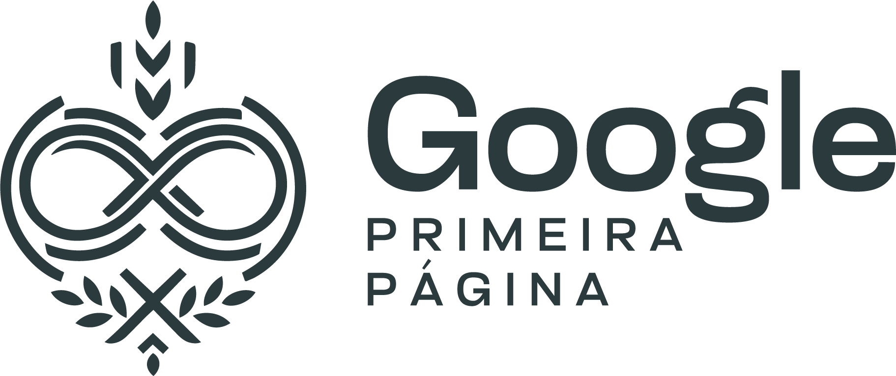

Sobre o Google Primeira Página…
Aqui nós temos uma única missão: Colocar a sua empresa na primeira página do Google. Fazemos isso através de nossa solução detalhada e personalizada que colhe informações cruciais da sua empresa, e garante um posicionamento realmente efetivo, colocando-o na primeira página do Google em até 7 dias. Se sua empresa não alcançar a primeira página na região, garantimos a devolução total do seu investimento.
